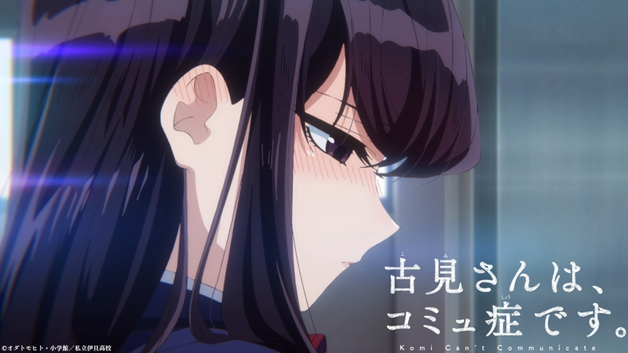
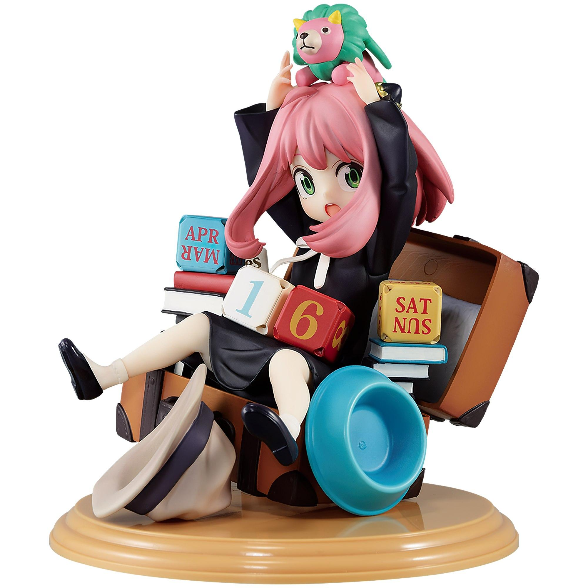

Mercancías
Tantei wa Mou, Shindeiru celebra el cumpleaños de Siesta con una lotería
En el sitio oficial para la lotería japonesa KUJIBIKIDO se anunció una colaboración con la franquicia animada de "The
Detective Is Already Dead", en la realización de un sorteo de productos que estará disponible del 31 de marzo al 21
de abril de este año en Japón. La colaboración celebra el cumpleaños de la protagonista Siesta, celebrado el 2 de abril
de acuerdo con el lore de las novelas ligeras originales, e incluye una variedad de productos como premios.
La obra inspiró una adaptación al anime de doce episodios producida por los estudios ENGI, bajo la dirección de Manabu
Kurihara (Uzaki-chan wa Asobitai!) y guiones escritos por Deko Akao (Arakawa Under the Bridge), estrenada durante la
temporada de Verano-2021 (Julio-Septiembre). Hasta la fecha no hay ninguna noticia sobre alguna secuela.
Leer más...

Mercancías
Komi-san wa, Komyushou Desu: Komi inspira una adorable Nendoroid
La fabricante y distribuidora Good Smile Company anunció el lanzamiento de una figura Nendoroid basada en el personaje
Shouko Komi de la franquicia de Komi-san Can’t Communicate, para el mes de octubre de 2022 en Japón. El producto tiene
una altura de aproximadamente 100 mm, tendrá un precio de 5,500 yenes (45 dólares) y se encuentra disponible para la
reservación en el sitio oficial del distribuidor
El fabricante y distribuidor buena sonrisa empresa anunció el lanzamiento de una figura Nendoroid basado en el personaje
Shoko Komi de la franquicia Komi-san wa, Komyushou Desu (Komi no puede comunicarse), para el mes de octubre de 2022 en Japón.
La empresa describe el producto de la siguiente manera: “¡De la serie de anime “Komi-san wa, Komyushou Desu” llega un
Nendoroid de Shouko Komi! Viene con tres expresiones faciales, que incluyen una hermosa cara estándar, una cara con los ojos
muy abiertos y una cara sonrojada.""
Leer más...

Mercancías
Seishun Buta Yarou: Las chicas visten geniales atuendos para nuevos productos
En el sitio oficial para la cadena de tiendas Don Qujiote se anunció una colaboración con la franquicia de Rascal
Does Not Dream of Bunny Girl Senpai, en el lanzamiento de una línea de productos que estarán disponibles a partir
del próximo 26 de marzo en Japón en distintas sucursales de la compañía.
El comunicado de prensa escribe: «Ya están a la venta los productos de la colaboración ‘Seishun Buta Yarou wa Bunny
Girl Senpai no Yume wo Minai’ x Don Quijote. Ya están disponibles las nuevas ilustraciones del popular anime de televisión
‘Seishun Buta Yarou wa Bunny Girl Senpai no Yume wo Minai‘. Se pondrán a la venta nuevos productos con ilustraciones recién
dibujadas de Mai Sakurajima, Kaede Asuzagawa, Rio Futaba y Shouko Makinohara. Los productos estarán disponibles a partir
del sábado 26 de marzo de 2022 en las tiendas Don Quijote participantes de todo el país. Aprovecha para visitar tu tienda
Don Quijote más cercana».
Leer más...

Mercancías
SPY x FAMILY inspira figuras e ilustraciones para una lotería
La lotería japonesa Ichiban Kuji anunció una colaboración con la franquicia animada basada en el manga de Tatsuya
Endo, SPY x FAMILY, que inspirará un sorteo de productos disponible a partir del mes de abril de 2022 en Japón.
Los boletos de participación tendrán un precio individual de 700 yenes (alrededor de 7 dólares estadounidenses)
e incluye una variedad de productos que serán entregados como premios.
La obra está inspirando una adaptación al anime producida por WIT Studio y CloverWorks, bajo la dirección de Kazuhiro Furuhashi
(Haikara-san ga Tooru Movie 1: Benio, Hana no 17-sai, Hunter x Hunter, Rurouni Kenshin: Meiji Kenkaku Romantan) y guiones
escritos por Kazuaki Shimada (Mahou Shoujo Nante Mou Ii Desukara, Yakusoku no Neverland), programada para estrenarse en el año
2022 en Japón.
Leer más...